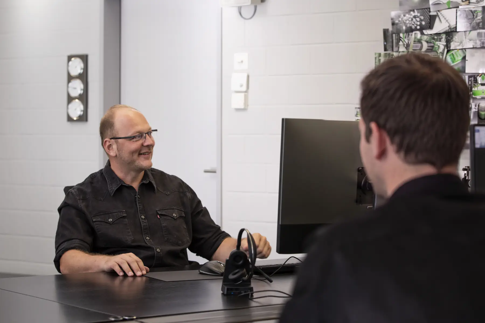
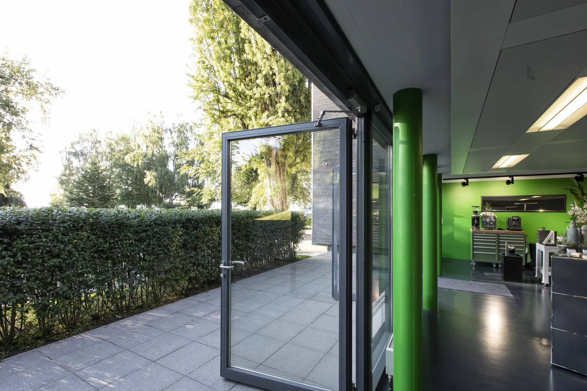
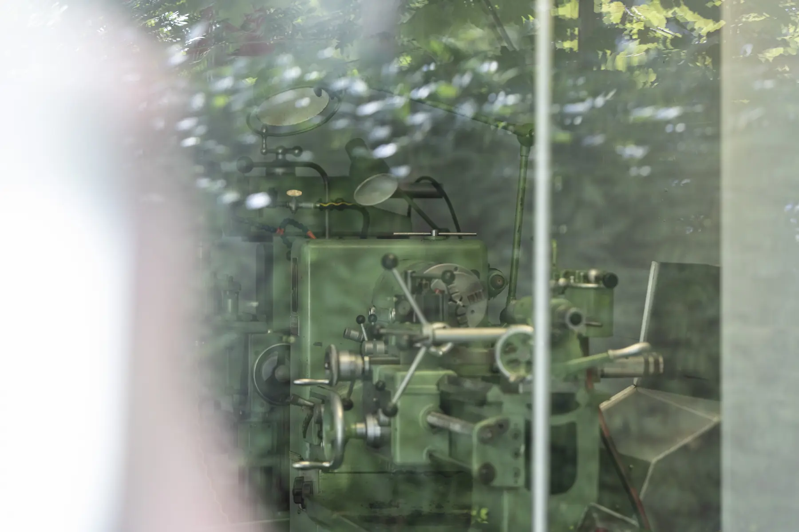

01Dissolve
Das neue Foto blendet über dem alten ein, das alte bleibt darunter und wird nach der Ruhe ausgeblendet. So läuft der Block heute.
Heute wechselt das Foto im Block Unternehmen als reiner Crossfade (Feder 420 / 38) im Takt von 0.52 s und wirkt dadurch schlagartig. Alle sieben Rahmen unten laufen auf derselben Uhr mit demselben Foto-Index. Takt und Tempo gelten für alle gleichzeitig, damit die Übergänge direkt vergleichbar sind.
Entscheid vom 09.10.2026: 04 Clear mit Takt 2 s und 40 % schnellerer Feder (Faktor 1.4), eingebaut im Block Unternehmen der Startseite (r1). Alle sieben Übergänge stehen in main.js als Bibliothek bereit (data-transition, data-interval und data-speed am Rahmen).
Reduzierte Bewegung ist im System aktiv: Die Uhr startet nicht, Einzelschritt zeigt das nächste Foto ohne Animation.
0.52 s und 1x entsprechen dem Prompt. Tempo 2x und 3x skalieren die Federn (Tension / k², Friction / k), der Takt bleibt wie gewählt.
Das neue Foto blendet über dem alten ein, das alte bleibt darunter und wird nach der Ruhe ausgeblendet. So läuft der Block heute.
Wie Dissolve, zusätzlich zieht sich das neue Foto beim Einblenden von 1.12 auf 1 zusammen.
Eine Maske fährt von oben nach unten und deckt das neue Foto über dem alten auf, das Foto darin setzt sich dabei von 1.18 auf 1.
Das neue Foto kommt unscharf und leicht von oben, wird scharf und blendet dabei ein.
Das neue Foto wird wie eine Karte ausgeteilt: klein, von unten, abwechselnd nach links und rechts gedreht, und schwingt in den Rahmen ein. Dunkler Grund, damit die Ecken beim Drehen nicht leer wirken.
Der ganze Rahmen kippt abwechselnd um 4 Grad nach links und rechts, während das neue Foto überblendet.
Das neue Foto schiebt sich von unten herein, das alte weicht nach oben aus und dunkelt dabei leicht ab.
Derselbe Rahmen wie im Block Unternehmen, mit der Themenliste und ihrem Dimmen wie auf der Site. Der Übergang lässt sich hier umschalten, die Uhr bleibt dieselbe.






